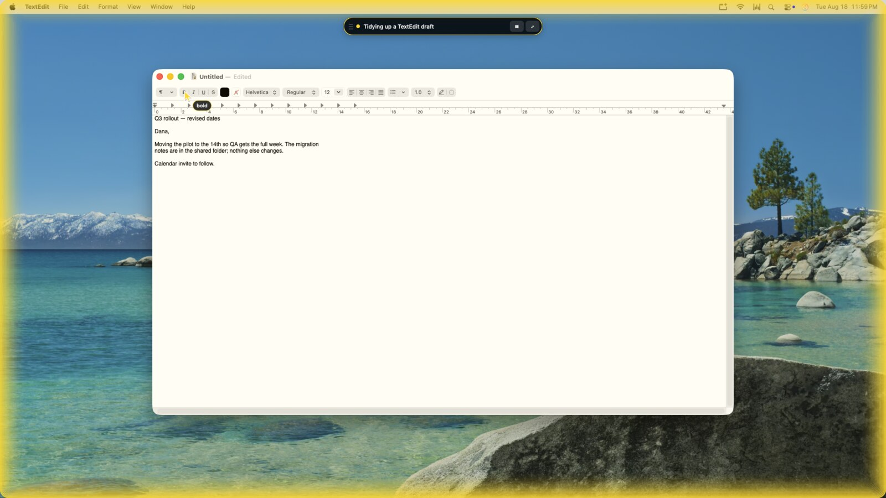
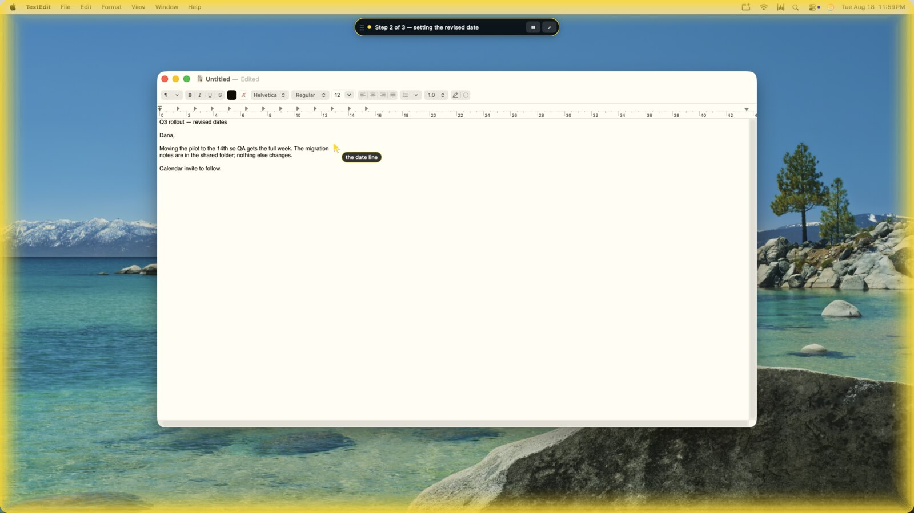
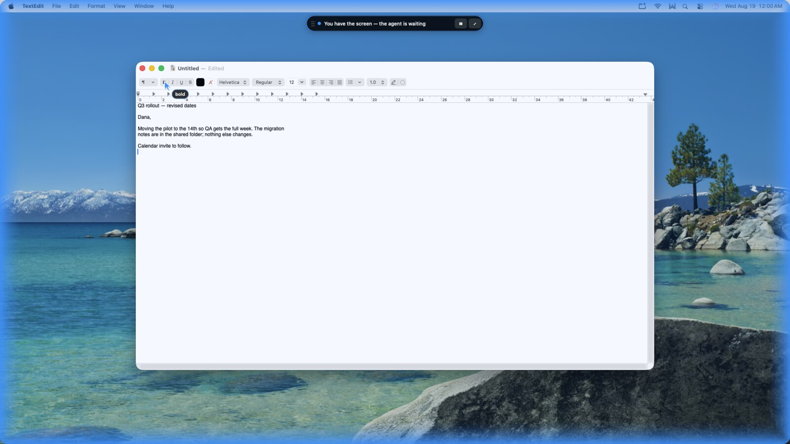
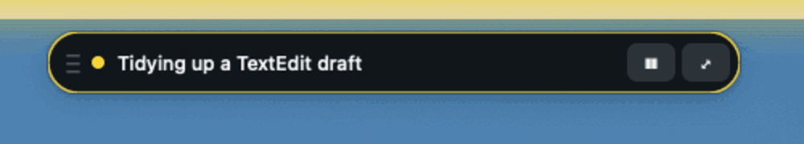
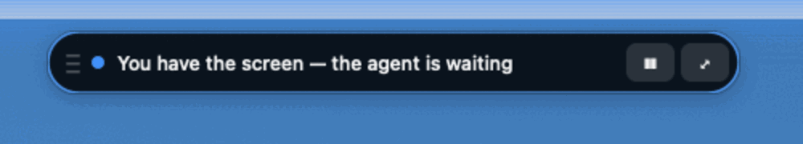

<title>Spooky Action</title>
<meta name="description" content="Spooky Action gives an AI agent hands on a Mac without taking your mouse. It presses elements through the macOS accessibility layer, draws a pointer so you can watch, and hands the screen back the instant you move.">
<meta name="author" content="Jumpsy">
<meta name="keywords" content="macOS computer use, AI agent computer control, accessibility API automation, Claude Code Mac automation, AX UI element, agent desktop automation, macOS CLI automation, computer use without mouse control">
<link rel="canonical" href="https://jumpsy.github.io/spooky-action/">

<meta property="og:type" content="website">
<meta property="og:site_name" content="Spooky Action">
<meta property="og:title" content="Spooky Action — your agent acts at a distance, your cursor never moves">
<meta property="og:description" content="Computer use on a Mac that presses the button, not a pixel. Watch it work, and take the screen back by moving your mouse.">
<meta property="og:url" content="https://jumpsy.github.io/spooky-action/">
<meta property="og:image" content="https://jumpsy.github.io/spooky-action/img/og.jpg">
<meta property="og:image:width" content="1200">
<meta property="og:image:height" content="630">
<meta property="og:image:alt" content="A Mac desktop edged in a yellow glow, with a drawn pointer resting on the Bold button in TextEdit.">

<meta name="twitter:card" content="summary_large_image">
<meta name="twitter:title" content="Spooky Action — your agent acts at a distance, your cursor never moves">
<meta name="twitter:description" content="Computer use on a Mac that presses the button, not a pixel. Watch it work, and take the screen back by moving your mouse.">
<meta name="twitter:image" content="https://jumpsy.github.io/spooky-action/img/og.jpg">

<meta name="theme-color" content="#F1F0F6" media="(prefers-color-scheme: light)">
<meta name="theme-color" content="#100F16" media="(prefers-color-scheme: dark)">
<link rel="icon" href="data:image/svg+xml,<svg xmlns='http://www.w3.org/2000/svg' viewBox='0 0 100 100'><text y='.9em' font-size='90'>👻</text></svg>">

<link rel="preconnect" href="https://fonts.googleapis.com">
<link rel="preconnect" href="https://fonts.gstatic.com" crossorigin>
<link rel="stylesheet" href="https://fonts.googleapis.com/css2?family=Bricolage+Grotesque:opsz,wght@12..96,500;12..96,700;12..96,800&family=Newsreader:ital,opsz,wght@0,6..72,400;0,6..72,500;1,6..72,400&family=JetBrains+Mono:wght@400;600&display=swap">

<script type="application/ld+json">
{
  "@context": "https://schema.org",
  "@graph": [
    {
      "@type": "SoftwareApplication",
      "@id": "https://jumpsy.github.io/spooky-action/#app",
      "name": "Spooky Action",
      "alternateName": "spooky",
      "applicationCategory": "DeveloperApplication",
      "applicationSubCategory": "Desktop automation",
      "operatingSystem": "macOS",
      "url": "https://jumpsy.github.io/spooky-action/",
      "downloadUrl": "https://github.com/Jumpsy/spooky-action",
      "codeRepository": "https://github.com/Jumpsy/spooky-action",
      "programmingLanguage": ["Python", "Swift"],
      "license": "https://opensource.org/licenses/MIT",
      "image": "https://jumpsy.github.io/spooky-action/img/og.jpg",
      "description": "Computer use on a Mac for any AI agent. It presses elements through the macOS accessibility layer rather than clicking coordinates, draws a pointer so you can watch it work, and gives the screen back the instant you move your mouse.",
      "featureList": [
        "Presses UI elements by accessibility identity, not screen coordinates",
        "Never moves your real cursor",
        "On-screen glow, drawn pointer and control pill while the agent acts",
        "Hands the screen back immediately when you move your mouse",
        "--expect label guard refuses to press an element that moved",
        "One-command install and one-command uninstall"
      ],
      "offers": { "@type": "Offer", "price": "0", "priceCurrency": "USD" },
      "author": { "@type": "Person", "name": "Jumpsy", "url": "https://github.com/Jumpsy" }
    },
    {
      "@type": "FAQPage",
      "@id": "https://jumpsy.github.io/spooky-action/#faq",
      "mainEntity": [
        {
          "@type": "Question",
          "name": "Does it take control of my mouse?",
          "acceptedAnswer": { "@type": "Answer", "text": "No. Actions go through the macOS accessibility layer, so the real cursor never moves. The pointer you see on screen is drawn by Spooky Action. There is a separate fallback command group, spooky real, for apps that expose nothing to press — it does borrow the cursor, it says so out loud, and every result it returns is marked cursor_touched: true." }
        },
        {
          "@type": "Question",
          "name": "How do I take my screen back?",
          "acceptedAnswer": { "@type": "Answer", "text": "Move your mouse. The agent loses the screen immediately and is told immediately, rather than finding out from its next screenshot. The glow turns blue while you hold it. It resumes once you have been still for a couple of seconds." }
        },
        {
          "@type": "Question",
          "name": "What does it need permission to do?",
          "acceptedAnswer": { "@type": "Answer", "text": "Accessibility, and nothing else. spooky setup opens the exact System Settings pane, names the one row to switch on, waits, and then proves the permission works by using it for real." }
        },
        {
          "@type": "Question",
          "name": "How do I uninstall it?",
          "acceptedAnswer": { "@type": "Answer", "text": "Run ./uninstall.sh in the checkout. It removes the state directory, the virtualenv, the symlink and any running overlay, names each thing as it goes, and opens the Accessibility pane so you can untick the permission — the one part a script cannot do for you." }
        },
        {
          "@type": "Question",
          "name": "Which agents work with it?",
          "acceptedAnswer": { "@type": "Answer", "text": "Any of them. It is a command line tool, so Claude Code, an SDK loop, a shell script or a cron job all drive it the same way. Every command takes --json, and every command exits 75 with a concrete suggestion when it genuinely needs a human." }
        }
      ]
    }
  ]
}
</script>

<style>
/* ------------------------------------------------------------------ tokens */
:root{
  --paper:#F1F0F6;
  --card:#FFFFFF;
  --sunk:#E7E5EE;
  --ink:#16141F;
  --muted:#5B586B;
  --line:#DAD8E3;
  --rule:#C9C6D4;

  --agent:#FFD41A;          /* the agent has the screen */
  --agent-ink:#7A5C00;
  --you:#268CFF;            /* you have the screen */
  --you-ink:#0B4FA8;

  --term:#14131C;
  --term-fg:#DCDCE6;
  --term-dim:#7E7C93;
  --term-bar:#1D1B27;
  --shadow:0 1px 2px rgba(22,20,31,.05), 0 12px 34px -18px rgba(22,20,31,.28);
  --hl-a:62%;                /* highlight band under the headline */
  --hl-b:92%;
}
@media (prefers-color-scheme: dark){
  :root:not([data-theme="light"]){
    --paper:#100F16;
    --card:#181722;
    --sunk:#1F1D2A;
    --ink:#EDECF3;
    --muted:#9E9BB0;
    --line:#2C2A38;
    --rule:#3A3849;
    --agent:#FFD41A;
    --agent-ink:#FFE070;
    --you:#5FA8FF;
    --you-ink:#9CC8FF;
    --term:#0B0A11;
    --term-fg:#DCDCE6;
    --term-dim:#767490;
    --term-bar:#15141D;
    --shadow:0 1px 2px rgba(0,0,0,.4), 0 18px 42px -20px rgba(0,0,0,.75);
    --hl-a:84%;
    --hl-b:99%;
  }
}
:root[data-theme="dark"]{
  --paper:#100F16;
  --card:#181722;
  --sunk:#1F1D2A;
  --ink:#EDECF3;
  --muted:#9E9BB0;
  --line:#2C2A38;
  --rule:#3A3849;
  --agent:#FFD41A;
  --agent-ink:#FFE070;
  --you:#5FA8FF;
  --you-ink:#9CC8FF;
  --term:#0B0A11;
  --term-fg:#DCDCE6;
  --term-dim:#767490;
  --term-bar:#15141D;
  --shadow:0 1px 2px rgba(0,0,0,.4), 0 18px 42px -20px rgba(0,0,0,.75);
  --hl-a:84%;
  --hl-b:99%;
}

/* ------------------------------------------------------------------- base */
*{box-sizing:border-box}
html{-webkit-text-size-adjust:100%}
body{
  margin:0;
  background:var(--paper);
  color:var(--ink);
  font-family:"Newsreader","Iowan Old Style",Georgia,serif;
  font-size:19px;
  line-height:1.62;
  font-optical-sizing:auto;
}
h1,h2,h3,.disp{
  font-family:"Bricolage Grotesque","Helvetica Neue",Arial,sans-serif;
  font-weight:700;
  letter-spacing:-.022em;
  text-wrap:balance;
  margin:0;
}
code,kbd,pre,.mono{font-family:"JetBrains Mono",ui-monospace,SFMono-Regular,Menlo,monospace}
a{color:inherit;text-underline-offset:.18em;text-decoration-thickness:from-font}
a:focus-visible,button:focus-visible{outline:2px solid var(--you);outline-offset:3px;border-radius:4px}
img{max-width:100%;display:block}
::selection{background:var(--agent);color:#16141F}

.wrap{max-width:1060px;margin:0 auto;padding:0 26px}
.measure{max-width:70ch}

/* ------------------------------------------------------------- signal rail
   The page's one structural device is the product's own signal: a rail down
   the left of each block, coloured for who has the screen in that block. */
.sec{padding:64px 0 8px}
.sec > .wrap{position:relative;padding-left:44px}
.sec > .wrap::before{
  content:"";position:absolute;left:0;top:6px;bottom:14px;width:3px;
  background:var(--rule);border-radius:3px;
}
.sec.is-agent > .wrap::before{background:var(--agent)}
.sec.is-you > .wrap::before{background:var(--you)}
@media (max-width:720px){ .sec > .wrap{padding-left:22px} }

.eyebrow{
  font-family:"JetBrains Mono",monospace;font-size:11.5px;font-weight:600;
  letter-spacing:.15em;text-transform:uppercase;color:var(--muted);
  margin:0 0 14px;display:flex;align-items:center;gap:9px;
}
.eyebrow .dot{width:8px;height:8px;border-radius:50%;background:var(--rule);flex:none}
.is-agent .eyebrow .dot{background:var(--agent)}
.is-you .eyebrow .dot{background:var(--you)}

h2{font-size:clamp(27px,3.4vw,40px);line-height:1.1;margin-bottom:18px}
h3{font-size:20px;letter-spacing:-.012em;margin:34px 0 8px}
p{margin:0 0 18px}
.lede{font-size:21px;color:var(--muted)}
strong{font-weight:600;color:var(--ink)}

/* ---------------------------------------------------------------- masthead */
header.top{
  border-bottom:1px solid var(--line);
  background:color-mix(in srgb, var(--paper) 86%, transparent);
  backdrop-filter:saturate(1.4) blur(9px);
  position:sticky;top:0;z-index:20;
}
.topbar{display:flex;align-items:center;gap:16px;padding:13px 26px;max-width:1060px;margin:0 auto}
.mark{font-family:"Bricolage Grotesque",sans-serif;font-weight:800;font-size:17px;letter-spacing:-.02em;display:flex;align-items:center;gap:9px}
.mark .ghost{font-size:19px;line-height:1}
.topbar nav{margin-left:auto;display:flex;gap:20px;align-items:center;
  font-family:"JetBrains Mono",monospace;font-size:12.5px;color:var(--muted)}
.topbar nav a{text-decoration:none}
.topbar nav a:hover{color:var(--ink);text-decoration:underline}
@media (max-width:640px){ .topbar nav .hide-sm{display:none} }

/* -------------------------------------------------------------------- hero */
.hero{padding:74px 0 10px}
.hero h1{font-size:clamp(40px,7vw,78px);line-height:.98;letter-spacing:-.035em;font-weight:800}
.hero h1 .q{
  background:linear-gradient(to bottom,
    transparent var(--hl-a), var(--agent) var(--hl-a),
    var(--agent) var(--hl-b), transparent var(--hl-b));
}
.hero .lede{font-size:clamp(19px,2.2vw,23px);margin-top:22px;max-width:62ch}
.cta{display:flex;flex-wrap:wrap;gap:12px;align-items:center;margin:30px 0 0}
.btn{
  font-family:"JetBrains Mono",monospace;font-size:13px;font-weight:600;
  text-decoration:none;padding:11px 17px;border-radius:9px;border:1px solid var(--ink);
  background:var(--ink);color:var(--paper);transition:transform .12s ease;
}
.btn:hover{transform:translateY(-1px)}
.btn.ghost{background:transparent;color:var(--ink);border-color:var(--rule)}
.btn.ghost:hover{border-color:var(--ink)}

/* ------------------------------------------------------------------ shots */
figure{margin:26px 0 0}
.shot{
  border-radius:14px;overflow:hidden;border:1px solid var(--line);
  box-shadow:var(--shadow);background:var(--sunk);
}
.shot img{width:100%;height:auto}
figcaption{
  font-family:"JetBrains Mono",monospace;font-size:12px;line-height:1.6;
  color:var(--muted);margin-top:11px;max-width:66ch;
}
.bleed{margin-left:calc(-1 * min(44px, 4vw))}
.pair{display:grid;gap:22px;grid-template-columns:1fr 1fr;margin-top:26px}
@media (max-width:760px){ .pair{grid-template-columns:1fr} }
.pill-shot{border-radius:11px;overflow:hidden;border:1px solid var(--line);box-shadow:var(--shadow)}

/* --------------------------------------------------------------- terminal */
.term{
  background:var(--term);color:var(--term-fg);border-radius:12px;overflow:hidden;
  border:1px solid var(--line);box-shadow:var(--shadow);margin:22px 0;
}
.term .bar{
  background:var(--term-bar);padding:9px 13px;display:flex;align-items:center;gap:7px;
  border-bottom:1px solid rgba(255,255,255,.06);
}
.term .bar i{width:10px;height:10px;border-radius:50%;display:block;background:#3D3B4C}
.term .bar i:nth-child(1){background:#FF5F57}
.term .bar i:nth-child(2){background:#FEBC2E}
.term .bar i:nth-child(3){background:#28C840}
.term .bar span{
  margin-left:8px;font-family:"JetBrains Mono",monospace;font-size:11px;
  color:var(--term-dim);letter-spacing:.02em;
}
.term pre{
  margin:0;padding:16px 18px;overflow-x:auto;font-size:13px;line-height:1.72;
  white-space:pre;tab-size:2;
}
.term .p{color:var(--term-dim)}          /* prompt */
.term .c{color:var(--term-dim)}          /* comment */
.term .ok{color:#5FD08A}
.term .no{color:#FF7B72}
.term .y{color:var(--agent)}
.term .b{color:#6FB1FF}

/* ------------------------------------------------------------------ cards */
.cards{display:grid;gap:16px;grid-template-columns:repeat(3,1fr);margin:28px 0 6px}
@media (max-width:860px){ .cards{grid-template-columns:1fr} }
.card{
  background:var(--card);border:1px solid var(--line);border-radius:13px;
  padding:19px 20px 21px;box-shadow:var(--shadow);
}
.card h3{margin:0 0 7px;font-size:16.5px}
.card p{margin:0;font-size:16.5px;color:var(--muted);line-height:1.55}

/* ------------------------------------------------------------------ table */
.tablewrap{overflow-x:auto;margin:24px 0;border:1px solid var(--line);border-radius:12px;background:var(--card)}
table{border-collapse:collapse;width:100%;font-size:14.5px}
th,td{text-align:left;padding:11px 16px;border-bottom:1px solid var(--line);vertical-align:top}
tbody tr:last-child td{border-bottom:0}
th{
  font-family:"JetBrains Mono",monospace;font-size:11px;letter-spacing:.13em;
  text-transform:uppercase;color:var(--muted);font-weight:600;background:var(--sunk);
}
td.cmd{font-family:"JetBrains Mono",monospace;font-size:13px;white-space:nowrap;font-weight:600}
td.what{color:var(--muted);font-family:"Newsreader",Georgia,serif;font-size:16.5px}

/* ------------------------------------------------------------------- misc */
.note{
  border-left:3px solid var(--agent);background:var(--card);border-radius:0 11px 11px 0;
  padding:16px 20px;margin:26px 0;font-size:17px;color:var(--muted);
}
.note strong{color:var(--ink)}
.kv{display:flex;gap:9px;align-items:baseline;font-family:"JetBrains Mono",monospace;font-size:12.5px;color:var(--muted);margin:6px 0}
.tag{
  display:inline-block;font-family:"JetBrains Mono",monospace;font-size:11px;font-weight:600;
  letter-spacing:.07em;text-transform:uppercase;padding:3px 8px;border-radius:6px;
}
.tag.agent{background:var(--agent);color:#5A4400}
.tag.you{background:var(--you);color:#FFF}

footer{border-top:1px solid var(--line);margin-top:74px;padding:38px 0 60px;color:var(--muted);font-size:16.5px}
footer .wrap{padding-left:26px}
footer a{color:var(--ink)}

@media (prefers-reduced-motion: reduce){ *{animation:none!important;transition:none!important} }
</style>

<header class="top">
  <div class="topbar">
    <span class="mark"><span class="ghost">👻</span> Spooky Action</span>
    <nav>
      <a href="#how" class="hide-sm">How it works</a>
      <a href="#watch" class="hide-sm">Watching it</a>
      <a href="#commands" class="hide-sm">Commands</a>
      <a href="https://github.com/Jumpsy/spooky-action">GitHub</a>
    </nav>
  </div>
</header>

<main>

  <section class="hero">
    <div class="wrap">
      <h1>Your agent acts at&nbsp;a&nbsp;distance.<br><span class="q">Your cursor never moves.</span></h1>
      <p class="lede">
        Computer use on a Mac for any AI agent — Claude Code, an SDK loop, a shell
        script. It presses the button, not a pixel. You watch it happen, and you take
        the screen back whenever you like by moving your mouse.
      </p>
      <div class="cta">
        <a class="btn" href="https://github.com/Jumpsy/spooky-action">Get it on GitHub</a>
        <a class="btn ghost" href="#install">Install in one command</a>
      </div>
    </div>
  </section>

  <!-- ============================================================ acting -->
  <section class="sec is-agent" id="watch">
    <div class="wrap">
      <p class="eyebrow"><span class="dot"></span> The agent has the screen</p>
      <h2>This is what it looks like when a machine is driving.</h2>
      <div class="measure">
        <p>
          Invisible automation is worse than no automation. So while the agent is
          working, the edges of every display glow, a drawn pointer glides to whatever
          is about to be pressed, and a pill at the top says what the job is.
        </p>
      </div>

      <figure class="bleed">
        <div class="shot">
          
        </div>
        <figcaption>
          A real screenshot, not a mockup. The pointer on the Bold button is drawn by
          Spooky Action — the actual cursor is somewhere else entirely, wherever its
          owner left it.
        </figcaption>
      </figure>

      <div class="measure">
        <h3>The glow follows the job, not the click</h3>
        <p>
          An agent that lights the screen for every individual press and drops it a
          second later reads as a fault, and teaches you to ignore the one signal that
          matters. So the agent opens a run, and the run is what the screen reflects.
        </p>
      </div>

      <div class="term">
        <div class="bar"><i></i><i></i><i></i><span>zsh — spooky</span></div>
<pre><span class="p">$</span> spooky begin <span class="y">"Tidying up a TextEdit draft"</span>
  <span class="ok">✓</span> the screen is yours — Tidying up a TextEdit draft
    it closes itself in 15 min if you forget `spooky end`

<span class="p">$</span> spooky press TextEdit 8 --expect <span class="y">"bold"</span>
  <span class="ok">✓</span> pressed bold — your cursor did not move

<span class="p">$</span> spooky say <span class="y">"Step 2 of 3 — setting the revised date"</span>
  Pill now reads: Step 2 of 3 — setting the revised date

<span class="p">$</span> spooky end
  <span class="ok">✓</span> done — screen released</pre>
      </div>

      <figure class="bleed">
        <div class="shot">
          
        </div>
        <figcaption>
          Same run, one step later. The glow never blinked; only the label changed.
        </figcaption>
      </figure>
    </div>
  </section>

  <!-- ========================================================= handing back -->
  <section class="sec is-you">
    <div class="wrap">
      <p class="eyebrow"><span class="dot"></span> You have the screen</p>
      <h2>Move your mouse. That is the whole gesture.</h2>
      <div class="measure">
        <p>
          The instant you touch the mouse the agent loses the screen and is told
          <strong>immediately</strong> — not on its next screenshot. That word is the
          entire safety argument. An agent that finds out it lost the screen by looking
          at a picture afterwards has already typed into your document.
        </p>
        <p>
          Everything turns your colour. The run does not end, it waits; you get it back
          the moment you have been still for a couple of seconds, and it is told that too.
        </p>
      </div>

      <figure class="bleed">
        <div class="shot">
          
        </div>
        <figcaption>
          Mid-run, one mouse movement later. Nothing was cancelled — the agent is simply
          standing still and saying so.
        </figcaption>
      </figure>

      <div class="pair">
        <div>
          <p class="kv"><span class="tag agent">Agent</span></p>
          <div class="pill-shot">
            
          </div>
        </div>
        <div>
          <p class="kv"><span class="tag you">You</span></p>
          <div class="pill-shot">
            
          </div>
        </div>
      </div>
      <figcaption>
        The pill is draggable and remembers where you put it. The ▮▮ button pauses
        everything from the screen itself; <span class="mono">spooky pause</span> from a
        terminal means exactly the same thing, and neither can leave the other stuck.
      </figcaption>
    </div>
  </section>

  <!-- ============================================================== how -->
  <section class="sec" id="how">
    <div class="wrap">
      <p class="eyebrow"><span class="dot"></span> How it presses things</p>
      <h2>It presses the element. Not the coordinate the element used to be at.</h2>
      <div class="measure">
        <p>
          Every other desktop-automation tool warps your cursor to a point and
          synthesizes a click. A screenshot goes to a model, the model says
          <em>the Save button is at 840, 612</em>, and by the time the click lands the
          sheet has moved fourteen pixels. Something else has been pressed and nobody
          knows what.
        </p>
        <p>
          Spooky Action goes through the macOS accessibility layer — the same tree a
          screen reader uses. Elements have identities there, so it can name what it
          is about to touch and check it is still what it was.
        </p>
      </div>

      <div class="term">
        <div class="bar"><i></i><i></i><i></i><span>zsh — spooky tree</span></div>
<pre><span class="p">$</span> spooky tree Safari

    12  Button           Reload                                    Press
    13  TextField        Address and Search                        Confirm
    27  Button           Save                                      Press

<span class="p">$</span> spooky press Safari 27 --expect <span class="y">"Save"</span>
  <span class="ok">✓</span> pressed Save — your cursor did not move

<span class="c"># and when the sheet moved between reading and pressing:</span>
<span class="p">$</span> spooky press Safari 27 --expect <span class="y">"Save"</span>

  <span class="no">index 27 is now "Don't Save", not "Save"</span>
  <span class="b">→</span> the interface changed after `tree` ran — take a fresh
    tree and use the new index
    <span class="c">exit 75 · nothing was pressed</span></pre>
      </div>

      <div class="measure">
        <p>
          That guard is the difference between automation you can leave running and
          automation you have to babysit. It costs one extra accessibility read and it
          turns the worst failure mode in computer use — pressing the wrong thing
          confidently — into a refusal with an exit code.
        </p>
      </div>

      <div class="note">
        <strong>This is how Codex does computer use on a Mac.</strong> Not a guess — the
        shipped binaries were checked. <span class="mono">SkyComputerUseService</span>
        links the whole <span class="mono">AXUIElement</span> family and contains zero
        mouse or keyboard event symbols. Its on-screen cursor is drawn, not moved.
      </div>

      <div class="cards">
        <div class="card">
          <h3>Identity, not pixels</h3>
          <p>Indices come from a deterministic walk of the accessibility tree. The same index means the same element until the UI actually changes.</p>
        </div>
        <div class="card">
          <h3>Every result is auditable</h3>
          <p>A click is a click and leaves no record. A press names the element it hit, in text, in the log, and in <span class="mono">--json</span>.</p>
        </div>
        <div class="card">
          <h3>Locks expire</h3>
          <p>An agent that crashes mid-action cannot keep your screen. Held locks and open runs both time out on their own.</p>
        </div>
      </div>
    </div>
  </section>

  <!-- ========================================================== fallback -->
  <section class="sec">
    <div class="wrap">
      <p class="eyebrow"><span class="dot"></span> When there is nothing to press</p>
      <h2>The honest fallback, kept deliberately separate.</h2>
      <div class="measure">
        <p>
          A canvas, a game, an old Java app — some things offer the accessibility layer
          nothing at all. There is a way through, and it is its own command group
          because it <em>does</em> borrow your cursor:
        </p>
      </div>

      <div class="term">
        <div class="bar"><i></i><i></i><i></i><span>zsh — the fallback</span></div>
<pre><span class="p">$</span> spooky real click 840,612
  <span class="b">!</span> borrowing your cursor — nothing here exposes an element
  <span class="ok">✓</span> clicked 840,612 · cursor put back at 1204,388
    <span class="c">cursor_touched: true</span></pre>
      </div>

      <div class="measure">
        <p>
          It announces itself, puts your pointer back where it found it, and marks every
          result <span class="mono">cursor_touched: true</span>. The moment a tool stops
          distinguishing between <em>I pressed the button</em> and <em>I took your
          mouse</em>, you stop being able to trust either.
        </p>
      </div>
    </div>
  </section>

  <!-- ========================================================== commands -->
  <section class="sec" id="commands">
    <div class="wrap">
      <p class="eyebrow"><span class="dot"></span> The command line</p>
      <h2>Everything it does, from a terminal.</h2>
      <div class="measure">
        <p>
          There is no daemon to configure and no protocol to speak. Every command takes
          <span class="mono">--json</span>, and every command exits <strong>75</strong>
          with a concrete suggestion when it genuinely needs a person — a handoff, not a
          failure.
        </p>
      </div>

      <div class="tablewrap">
        <table>
          <thead><tr><th scope="col">Command</th><th scope="col">What it does</th></tr></thead>
          <tbody>
            <tr><td class="cmd">spooky apps</td><td class="what">what it can act on right now</td></tr>
            <tr><td class="cmd">spooky tree APP</td><td class="what">what is on screen, with indices</td></tr>
            <tr><td class="cmd">spooky find APP TEXT</td><td class="what">search an app's screen by label</td></tr>
            <tr><td class="cmd">spooky press APP N</td><td class="what">press by index, with <span class="mono">--expect</span></td></tr>
            <tr><td class="cmd">spooky type APP N TEXT</td><td class="what">put text into a field</td></tr>
            <tr><td class="cmd">spooky click APP LABEL</td><td class="what">press by label, if exactly one matches</td></tr>
            <tr><td class="cmd">spooky focus APP</td><td class="what">bring an app forward</td></tr>
            <tr><td class="cmd">spooky at X,Y</td><td class="what">what is at this point — identified, not guessed</td></tr>
            <tr><td class="cmd">spooky begin / say / end</td><td class="what">open a run, retitle it, close it</td></tr>
            <tr><td class="cmd">spooky control / pause / resume / wait</td><td class="what">who has the screen</td></tr>
            <tr><td class="cmd">spooky watch</td><td class="what">start or stop the on-screen presence</td></tr>
            <tr><td class="cmd">spooky config</td><td class="what">every setting, in plain English</td></tr>
            <tr><td class="cmd">spooky setup / doctor</td><td class="what">permissions and health</td></tr>
            <tr><td class="cmd">spooky real …</td><td class="what">the fallback that does take your cursor</td></tr>
          </tbody>
        </table>
      </div>

      <div class="measure">
        <h3>Change how it looks and behaves, live</h3>
      </div>
      <div class="term">
        <div class="bar"><i></i><i></i><i></i><span>zsh — spooky config</span></div>
<pre><span class="p">$</span> spooky config accent=yellow wash=0   <span class="c"># glow only, no screen tint</span>
<span class="p">$</span> spooky config pointer=off hud=left
<span class="p">$</span> spooky config glide_seconds=1.2      <span class="c"># slow the pointer down to follow it</span>
<span class="p">$</span> spooky config --reset</pre>
      </div>
      <p class="measure" style="color:var(--muted)">The running overlay picks it up live. No restart.</p>
    </div>
  </section>

  <!-- =========================================================== install -->
  <section class="sec" id="install">
    <div class="wrap">
      <p class="eyebrow"><span class="dot"></span> Arriving, and leaving</p>
      <h2>One command in. One command out.</h2>

      <div class="term">
        <div class="bar"><i></i><i></i><i></i><span>zsh — install</span></div>
<pre><span class="p">$</span> git clone https://github.com/Jumpsy/spooky-action.git
<span class="p">$</span> cd spooky-action && ./install.sh

  Spooky Action
  <span class="ok">✓</span> Python 3.12.7
  <span class="ok">✓</span> spooky installed
  <span class="ok">✓</span> built the accessibility helper and the overlay, from source
  <span class="ok">✓</span> skill linked into ~/.claude/skills — Claude Code picks it up next start
  <span class="ok">✓</span> spooky linked into ~/.local/bin

  Next:

      spooky setup     grant Accessibility — it opens the pane and checks the fix took
      spooky apps      what it can act on
      spooky doctor    what works right now

  Changed your mind? ./uninstall.sh removes all of it.</pre>
      </div>

      <div class="measure">
        <p>
          <span class="mono">setup</span> does not tell you to go find System Settings. It
          opens the exact pane, names the one row to tick, waits, and then proves the
          permission took by using it for real. If it did not take, it says so and stays
          on that pane.
        </p>
        <p>
          It builds into a virtualenv inside the folder, and it compiles the two Swift
          helpers on your machine from the source in this repo. There is no prebuilt
          binary, because a prebuilt binary that reads your screen and drives your apps is
          exactly the thing nobody should run on trust.
        </p>
        <h3>And leaving should be as easy as arriving</h3>
      </div>

      <div class="term">
        <div class="bar"><i></i><i></i><i></i><span>zsh — uninstall</span></div>
<pre><span class="p">$</span> ./uninstall.sh

  Removing Spooky Action.

  This will delete:
    ~/.spooky  (settings, logs, built binaries)
    ~/spooky-action/.venv
    ~/.local/bin/spooky
    ~/.claude/skills/spooky-action  (the Claude Code skill)
    the overlay, if it is running

  It will NOT touch this folder itself, or anything you made with it.

  Go ahead? [y/N] y

  <span class="ok">✓</span> removed the running overlay
  <span class="ok">✓</span> removed ~/.spooky
  <span class="ok">✓</span> removed ~/.local/bin/spooky
  <span class="ok">✓</span> removed ~/.claude/skills/spooky-action
  <span class="ok">✓</span> removed ~/spooky-action/.venv

  One thing a script cannot undo for you: the macOS permission.
  Opening the pane now — switch OFF the row for your terminal app,
  if nothing else you use needs it.</pre>
      </div>

      <p class="measure" style="color:var(--muted)">
        If you use this once and decide it is not for you, that should take ten seconds
        and leave nothing behind.
      </p>
    </div>
  </section>

  <!-- =============================================================== eyes -->
  <section class="sec">
    <div class="wrap">
      <p class="eyebrow"><span class="dot"></span> The other half</p>
      <h2>Spooky Action has hands. It does not have eyes.</h2>
      <div class="measure">
        <p>
          No screenshots, no vision, no web. That is deliberate — plenty of people want an
          agent that can act on their Mac without one that watches their screen, and
          bundling the two means granting a permission for a capability you did not ask
          for. Spooky Action never requests Screen Recording, because it has no use for it.
        </p>
        <p>
          <a href="https://github.com/Jumpsy/agent-eyes"><strong>Agent Eyes</strong></a> is
          the other half: screenshots an agent can actually look at, design systems pulled
          out of the live CSSOM, local vision models so looking costs you nothing.
          Separate repos, separate installs, separate permissions.
        </p>
      </div>
      <div class="term">
        <div class="bar"><i></i><i></i><i></i><span>zsh — both halves</span></div>
<pre><span class="p">$</span> agent-eyes screen --grid        <span class="c"># see it</span>
<span class="p">$</span> spooky press Safari 27          <span class="c"># act on it</span></pre>
      </div>
    </div>
  </section>

  <!-- =========================================================== requires -->
  <section class="sec">
    <div class="wrap">
      <p class="eyebrow"><span class="dot"></span> Before you start</p>
      <h2>What it needs, and what it is.</h2>
      <div class="cards">
        <div class="card">
          <h3>macOS</h3>
          <p>The accessibility layer this is built on is a macOS API. There is no Windows or Linux port and there cannot be a straight one.</p>
        </div>
        <div class="card">
          <h3>Python 3.10+ and Xcode CLT</h3>
          <p><span class="mono">xcode-select --install</span> — the two Swift helpers are compiled on your machine from the source here.</p>
        </div>
        <div class="card">
          <h3>Accessibility permission</h3>
          <p>One row in System Settings, and nothing else. It never asks for Screen Recording.</p>
        </div>
      </div>
      <div class="measure">
        <p style="margin-top:26px;color:var(--muted)">
          Early, and building in the open. MIT licensed. The screenshots on this page are
          real captures of the tool running on a real desktop — if something here looks
          better than it works, that is a bug worth filing.
        </p>
      </div>
    </div>
  </section>

</main>

<footer>
  <div class="wrap">
    <p style="margin:0">
      <strong style="font-family:'Bricolage Grotesque',sans-serif">👻 Spooky Action</strong>
      — by <a href="https://github.com/Jumpsy">Jumpsy</a> ·
      <a href="https://github.com/Jumpsy/spooky-action">Source</a> ·
      <a href="https://github.com/Jumpsy/spooky-action/blob/main/LICENSE">MIT</a> ·
      <a href="https://github.com/Jumpsy/agent-eyes">Agent Eyes</a>
    </p>
  </div>
</footer>
